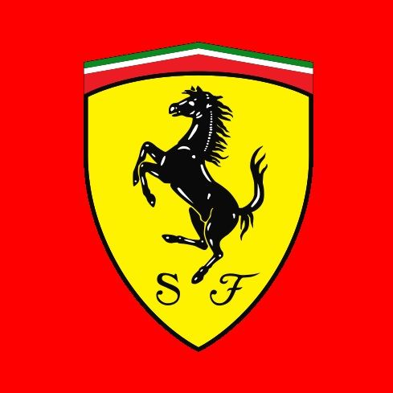
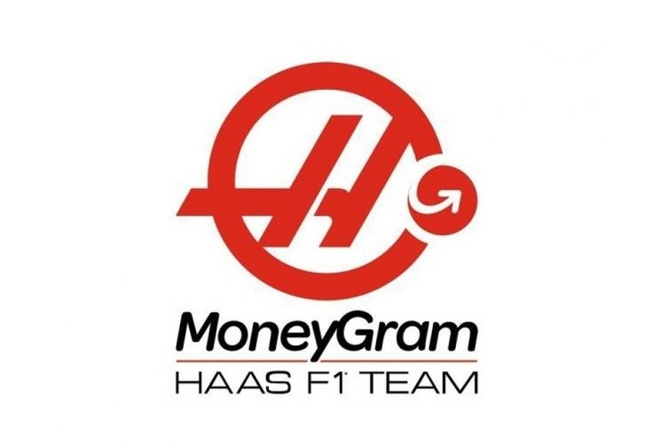
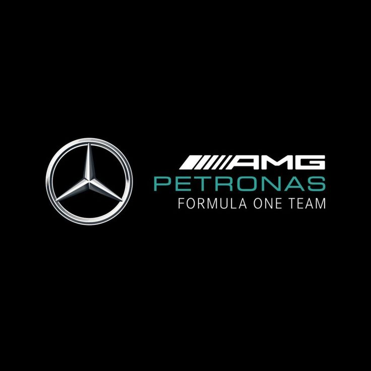
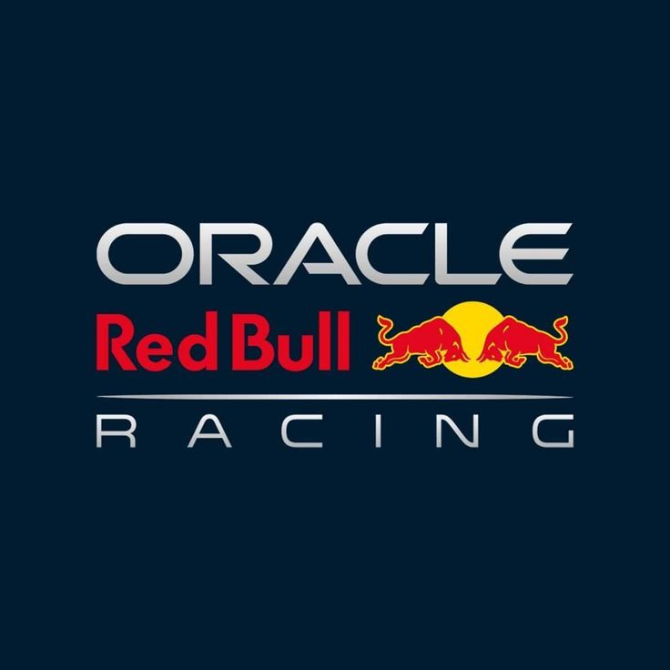
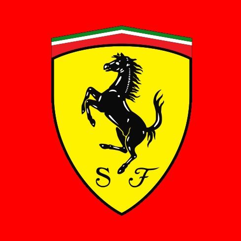
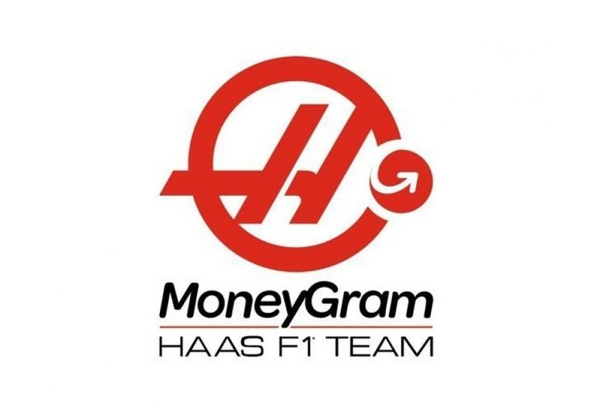
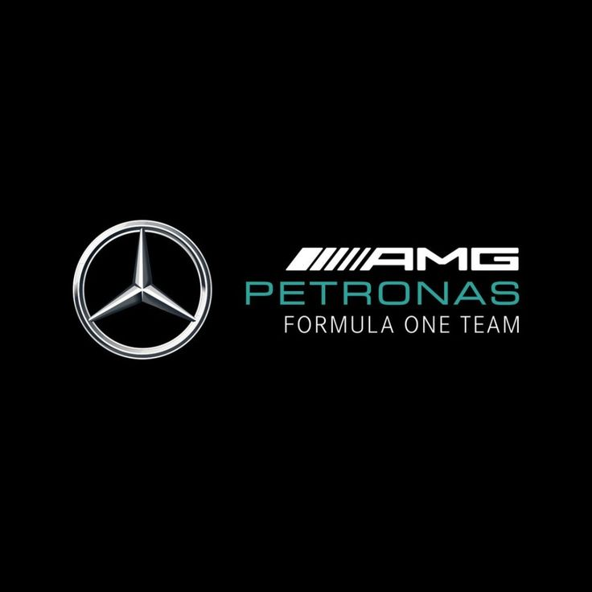
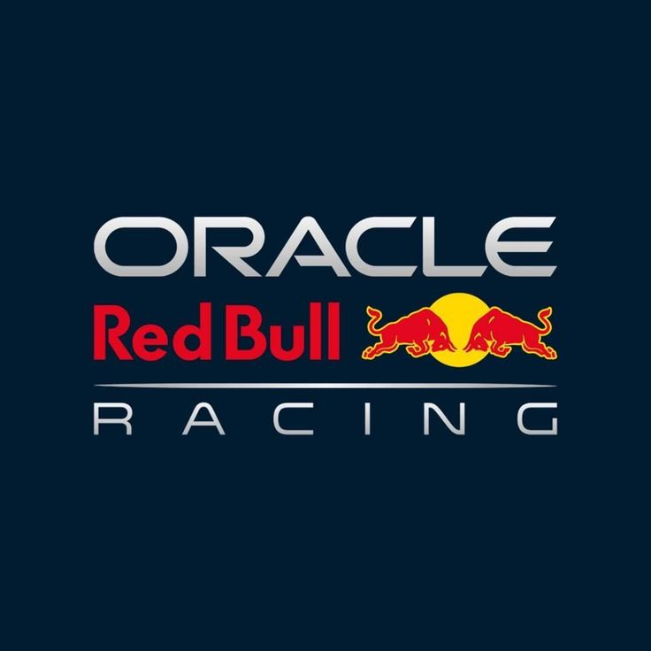
 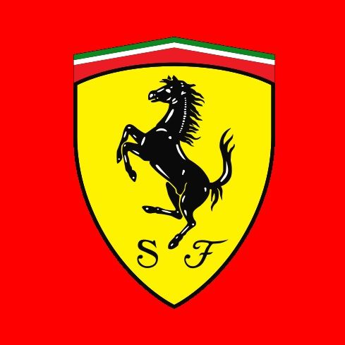
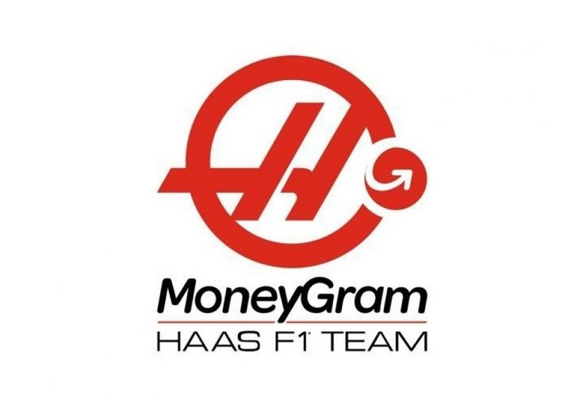
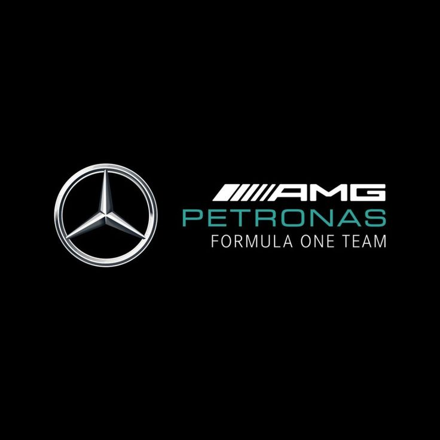
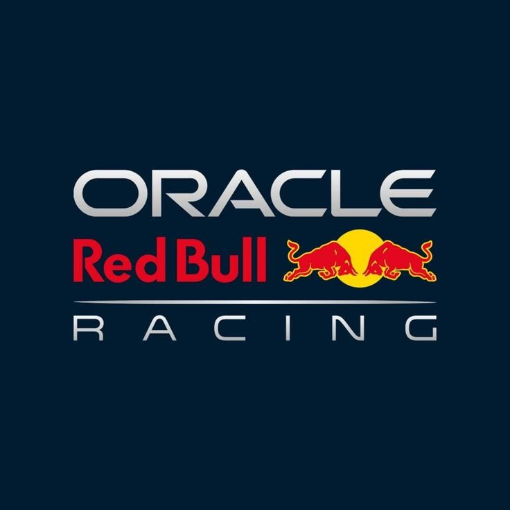
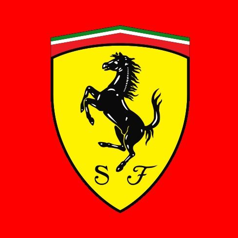
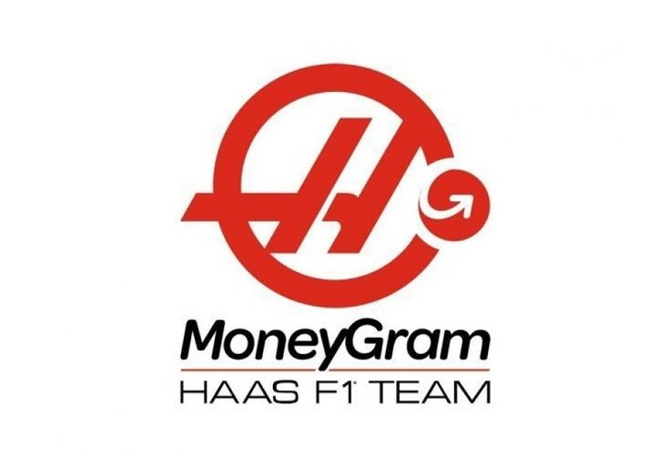
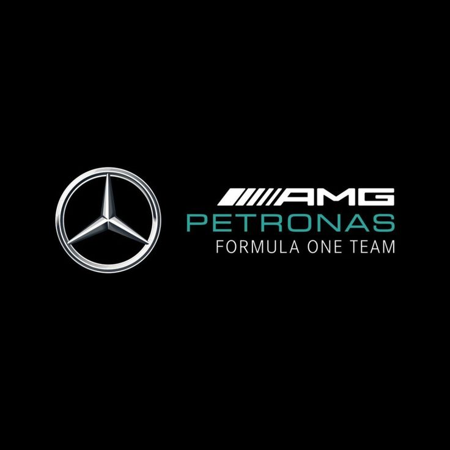
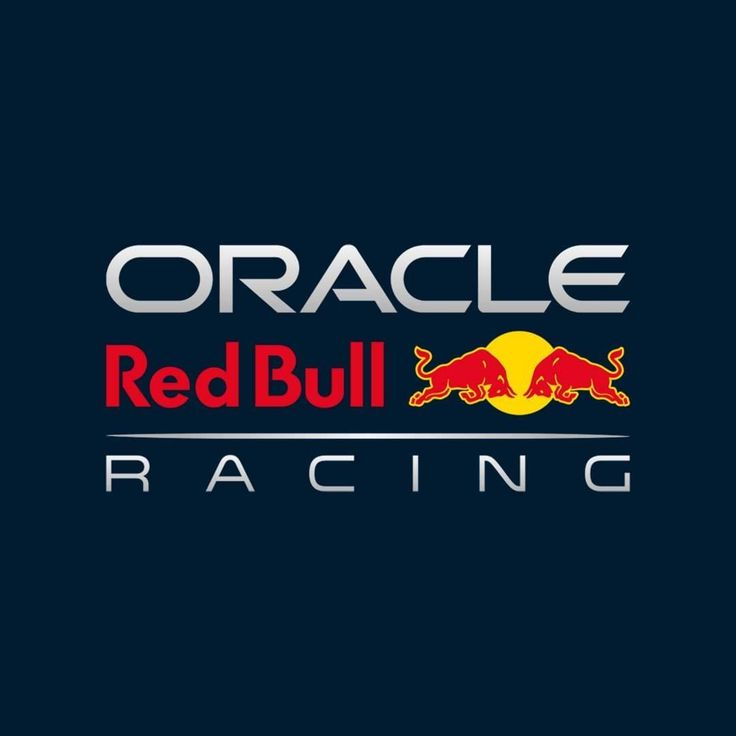
| Data | Hora | Grande Prêmio | Circuito |
|---|---|---|---|
| 16 de março de 2025 | 02:00 | GP da Austrália | Melbourne Grand Prix Circuit |
| 23 de março de 2025 | 03:00 | GP da China | Circuito Internacional de Xangai |
| 6 de abril de 2025 | 02:00 | GP do Japão | Circuito de Suzuka |
| 13 de abril de 2025 | 12:00 | GP do Bahrein | Circuito Internacional do Bahrein |
| 20 de abril de 2025 | 14:00 | GP da Arábia Saudita | Circuito de Rua de Gidá |
| 4 de maio de 2025 | 16:30 | GP de Miami | Autódromo Internacional de Miami |
| 18 de maio de 2025 | 10:00 | GP da Emília-Romanha | Autódromo Enzo e Dino Ferrari |
| 25 de maio de 2025 | 10:00 | GP de Mônaco | Circuito de Mônaco |
| 1 de junho de 2025 | 10:00 | GP da Espanha | Circuito de Barcelona-Catalunha |
| 15 de junho de 2025 | 15:00 | GP do Canadá | Circuito Gilles Villeneuve |
| 29 de junho de 2025 | 10:00 | GP da Áustria | Red Bull Ring |
| 6 de julho de 2025 | 11:00 | GP da Grã-Bretanha | Circuito de Silverstone |
| 27 de julho de 2025 | 10:00 | GP da Bélgica | Circuito de Spa-Francorchamps |
| 3 de agosto de 2025 | 10:00 | GP da Hungria | Hungaroring |
| 31 de agosto de 2025 | 10:00 | GP dos Países Baixos | Circuito de Zandvoort |
| 7 de setembro de 2025 | 10:00 | GP da Itália | Autódromo Nacional de Monza |
| 21 de setembro de 2025 | 08:00 | GP do Azerbaijão | Circuito de Rua de Bacu |
| 5 de outubro de 2025 | 09:00 | GP de Singapura | Circuito de Marina Bay |
| 19 de outubro de 2025 | 16:00 | GP dos Estados Unidos | Circuito das Américas |
| 26 de outubro de 2025 | 17:00 | GP da Cidade do México | Autódromo Hermanos Rodríguez |
| 9 de novembro de 2025 | 14:00 | GP de São Paulo | Autódromo José Carlos Pace |
| 22 de novembro de 2025 | 04:00 | GP de Las Vegas | Circuito de Rua de Las Vegas |
| 30 de novembro de 2025 | 12:00 | GP do Catar | Circuito Internacional de Lusail |
| 7 de dezembro de 2025 | 10:00 | GP de Abu Dhabi | Circuito de Yas Marina |
Max Verstappen conquistou sua primeira vitória na temporada ao cruzar a linha de chegada em primeiro lugar no Grande Prêmio de Suzuka, no Japão. Com o resultado, o piloto da Red Bull soma agora 61 pontos e assume a vice-liderança do Mundial de Pilotos, ficando a apenas um ponto de Lando Norris, da McLaren, que lidera com 62.
A Fórmula 1, também conhecida como F1, é a principal categoria do automobilismo mundial. Criada em 1950, a F1 surgiu da junção de diversos campeonatos europeus. Desde então, se tornou o palco das mais avançadas tecnologias automotivas e das disputas mais emocionantes do esporte a motor.
Grandes nomes passaram pela categoria, como Ayrton Senna, Michael Schumacher, Alain Prost e Lewis Hamilton. As equipes lendárias como Ferrari, McLaren, Mercedes e Red Bull marcaram épocas com vitórias históricas.
Ao longo das décadas, a Fórmula 1 evoluiu com regras, segurança e inovação tecnológica. Hoje, é um espetáculo global que movimenta milhões de fãs ao redor do mundo, com corridas em todos os continentes.

A Fórmula 1 (F1) é a principal categoria do automobilismo mundial e uma das competições esportivas mais icônicas. Governada pela FIA, a F1 atrai milhões de fãs ao redor do mundo, combinando tecnologia de ponta, talento humano e estratégias complexas.